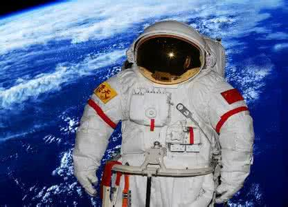
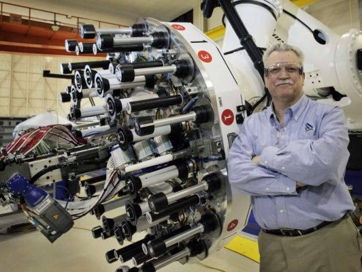
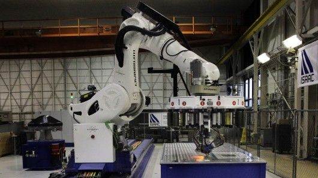
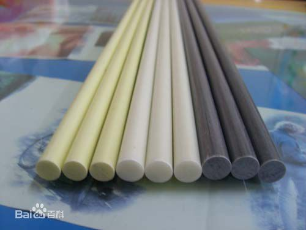
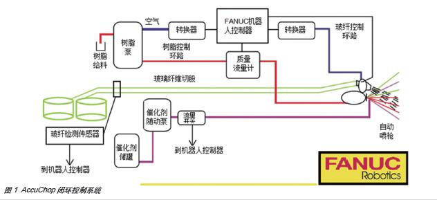
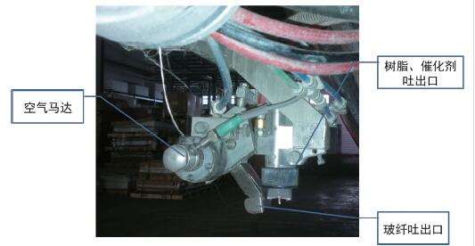

一.具体应用
二.优缺点
三.未来展望
1.碳纤维编制机器人
碳纤维：含碳量在95%以上的高强度、高模量纤维的新型纤维材料, 有强抗拉力和纤维柔软可加工性的优良性质，且密度轻，有着突出的耐高低温性能。航天服常采用此材料。
1.碳纤维编制机器人
美国NASA采用装配机器人ISAAC在进行碳纤维的制造工作。 其配备一个大型、可拆卸的盘状装置，并具有16根碳纤维带状线轴。不仅可以使ISAAC机器人快速工作，还可以更换盘状设备以适应各种需求。
1.碳纤维编制机器人
ISAAC机器人的线轴是由固化树脂与碳纤维的混合物制作而成。 而ISAAC机器人的机械臂与操控盘可以进行旋转到任意角度，还可以提供更多复杂的操作。而且还可以切换到不同的线轴来制造规格不一样的复合材料。 这些复合材料将会运用在航天航空方面。
2.玻璃纤维喷涂机器人
玻璃纤维：一种性能优异的无机非金属材料，通常作为复材料中的增强材料，电绝缘材料和绝热保温材料， 电路基板等。增强产品硬度、抗压、抗冲击等能力，多见于产品如风扇外罩、车顶、船只、浴缸、整体浴室等。
2.玻璃纤维喷涂机器人
控制实现：采用一套闭环控制系统， 具有树脂和玻纤输送速度控制及显示功能，以及各种检测报警功能。
2.玻璃纤维喷涂机器人
组成部分：机器人本体、机器人控制柜
玻纤检测设备：玻纤供给设备最大的问题就是玻纤断丝，通过检测声音来监听是否断丝。
玻纤喷涂设备：玻纤、树脂和催化剂在喷出后进行充分混合
